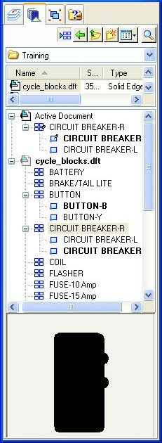

Organizing block libraries
Blocks can be organized in any way that suits your design needs. For example, each block can be stored as a discrete Block Library file, or a group of related blocks can be stored and organized in a single file. Battery.dft might contain one battery or it might contain different types of batteries. In general, however, defining many blocks in each Block Library file results in a more efficient use of storage space than defining one block per file.
Also, a single Block Library file can contain all of the different blocks that are used in a particular type of schematic or flow diagram. This example shows how all of the electrical components that are needed in a motorcycle schematic can be stored in one file, cycle_blocks.dft.
Files of type .dft, .dxf, and .dwg can be accessed and opened as illustrated here.
 |
Cycle_blocks.dft is the block library file that contains all the components necessary to build a schematic diagram of a motorcycle electrical system. You can place a block from this file into the active drawing by first clicking the cycle_blocks.dft file name in the Block Library File list. This opens the file to display the individual block names in the Block Selection Pane (the middle pane of the Library tab). |
|
The cycle_blocks.dft file is comprised of individual blocks for battery, brakes, fuses, lamps, and other components. You can place a block in the drawing by clicking the block name and then dragging it onto the sheet. After the block is placed, its name also appears in the Active Document list with an occurrence indicator glyph, as show at left. |
|
|
The bottom pane shows you the block before you use it. This is the graphic associated with the Circuit Breaker block selected in the Block Selection Pane, above. |
Sample Schematic Block Library
A comprehensive Sample Schematic Block Library of more than 1,000 electrical and mechanical schematic blocks is included with Solid Edge. These are stored in the Sample Blocks folder, organized by design disciplines: Electrical, Mechanical, and Piping. Below these discipline-level categories are subfolders that further organize the blocks.
Some Electrical subcategories include:
-
Analog Logic
-
Circuit Protectors
-
Communication and Power Generation
-
Composite Assemblies
-
Motors and Machines
-
PCL and Static Switching
-
Qualifying Symbols
-
Semiconductors
-
Switches and Relays
-
Transformers and Inductors
-
Transmission Path
-
VHF UHF SHF
To locate these schematic blocks, use the Block Library File List to browse to the Sample Blocks folder in the Solid Edge program folder, and then browse through the Electrical, Mechanical, and Piping folders.
Sample drawing sheet border blocks
The Sample Blocks folder also contains a set of drawing sheet borders with title blocks for various sheet sizes. These borders contain examples of property text and block labels, which extract information and display it in the title block.
These drawing sheet borders can be scaled and placed on the 2D Model sheet using the Drawing Area Setup command. Or you can drag a border onto the 2D Model sheet, a working sheet, or a background sheet.
The sample drawing sheet border blocks are also located in the \Program Files\Siemens\Solid Edge 2023\Sample Blocks folder, in a single file, TitleBlocks.dft.
Previewing individual sample blocks in the sample block library
You can preview the contents of a block file by clicking the block file name in the Block Library File List, then looking in the Block Preview Pane to see the graphics in the file.
Another way to preview all of the sample blocks in each category at once is to use Microsoft Explorer. Browse to the Sample Blocks folder in the Solid Edge Program folder on your desktop. You can select the View icon, and then set the view option to Thumbnails.
When you open a sample block file, the geometry is located on the 2D Model sheet. There is no geometry on Sheet 1. The majority of the geometry in these files is on the 0 layer.
In some files there is a TEXT layer. This is the layer on which the text resides. Some files may have a TEXT layer and not have text in the file.
How do I
Create a blockPlace a block
View and modify block scale
Set a default block view
Learn more
BlocksUsing blocks
Displaying blocks in the Library pane
Importing AutoCAD blocks
Scaling and rotating block graphics
Adding alternate block views
Look up more details
Solid Edge block terminology(Create) Block command
Block command bar
Block Occurrence Selection command bar
Place Block command
Block Options dialog box
Add Block View command
Set As Default (Block) command
Quick links
Block labels and propertiesEditing blocks
Connectors